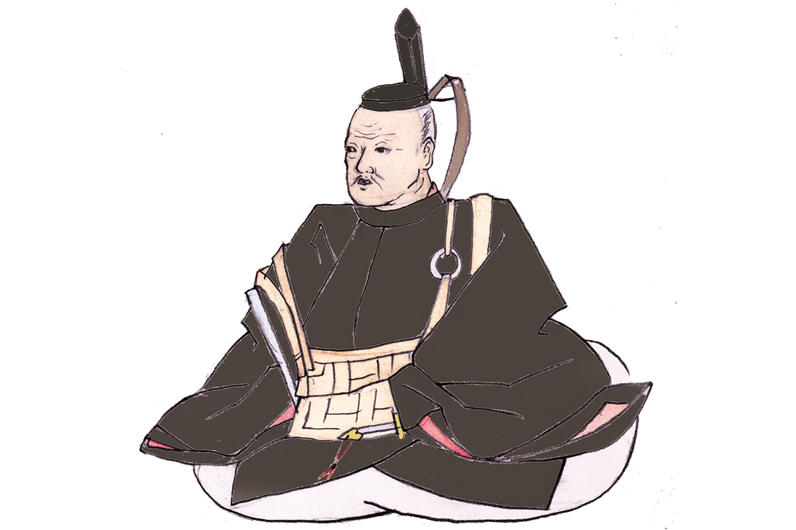
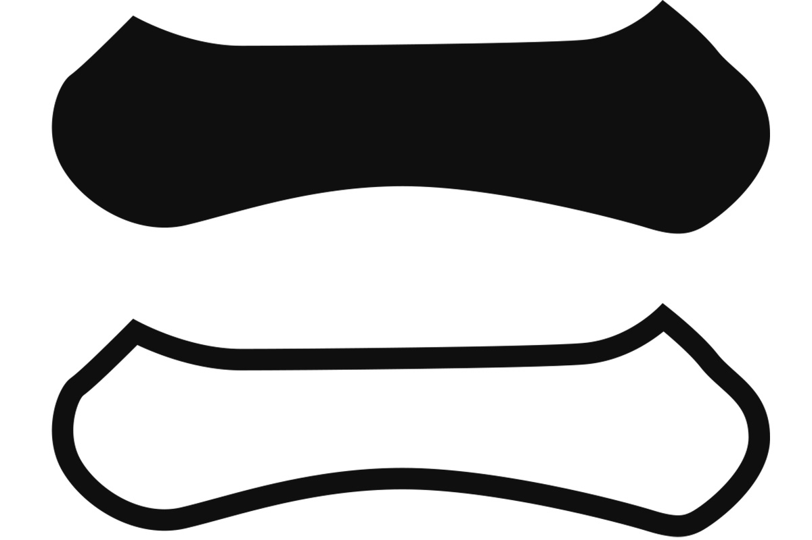
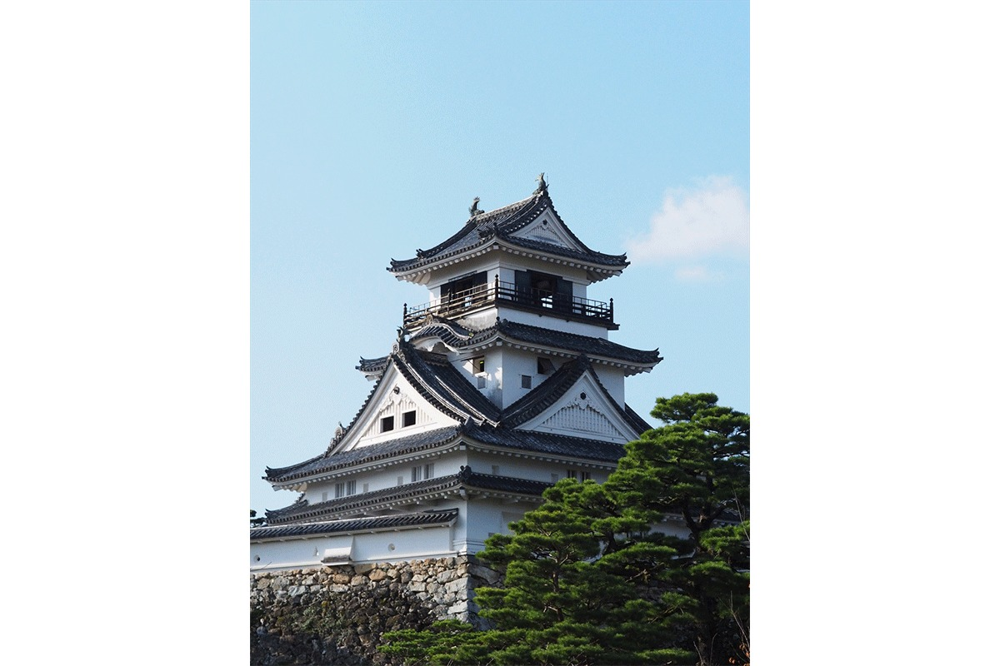

Префектура Айти · провинция Овари · история
Кадзутоё Ямаути: самурай из Овари, который служил трём объединителям и получил Тосу

Кадзутоё Ямаути не был ни великим стратегом, ни героем одной громкой битвы. Он родился в провинции Овари, нынешней префектуре Айти, по очереди служил трём объединителям Японии и к концу жизни получил собственное княжество.
Эпоха
Время сражающихся провинций
С конца XV до конца XVI века Япония жила в войнах. Сёгунат Муромати окончательно потерял власть, и место прежних наместников по всей стране заняли местные военные правители, даймё. Этот век японцы называют эпохой Сэнгоку, «эпохой воюющих провинций», и от него осталось больше всего полководцев, о которых рассказывают до сих пор.
Кадзутоё Ямаути родился около 1546 года (по другим данным, в 1545 году) и умер в 1605 году. Его род Ямаути вёл происхождение от знатного рода Фудзивара. Детское имя Кадзутоё было Тацуносукэ. Отец служил старшим вассалом у хозяев замка Ивакура в провинции Овари, поэтому и местом рождения называют то замок Курода, то окрестности замка Ивакура: оба сегодня в префектуре Айти.

Судьба
Три господина
Главное в судьбе Кадзутоё в том, что он служил всем трём «великим героям» эпохи, объединившим страну. Все трое тоже были родом из нынешней Айти.
Сначала он служил Нобунаге Оде (1534–1582), полководцу, который начал объединение Японии, и в 1568 году вошёл в отряд под началом Хидэёси Тоётоми (1537–1598), тогда ещё одного из военачальников Нобунаги. В 1570 году Кадзутоё впервые вышел на поле боя в битве у реки Анэгава. В 1573 году в битве при Тонэдзаке ему тяжело ранили лицо, но он всё же сразил вражеского военачальника. Так он и сделал себе имя.
После гибели Нобунаги Кадзутоё служил Хидэёси, который продолжил объединение и стал правителем всей страны. В походе, закончившемся битвой при Сидзугатакэ, он первым ворвался в замок Камэяма в провинции Исэ. В 1584 году в битве при Комаки и Нагакутэ строил укрепления, которые должны были окружить войско Иэясу Токугавы. В 1590 году участвовал в походе на Одавару и во взятии замка Яманака.
После смерти Хидэёси Кадзутоё перешёл на сторону Иэясу Токугавы (1543–1616), будущего основателя сёгуната Эдо. В 1600 году он пошёл с Иэясу в поход против князя Кагэкацу Уэсуги (1556–1623), а затем сражался при Сэкигахаре, в битве, решившей судьбу страны. Его отряду досталась охрана тылов, и отличиться в бою ему не пришлось. Тем не менее Иэясу отдал ему всю провинцию Тоса на острове Сикоку, нынешнюю префектуру Коти. В 1601 году Кадзутоё вошёл в замок Урадо и стал первым правителем княжества Тоса. Он построил замок Коти и умер в нём от болезни в 1605 году.
Девиз
«Удачу подбирает лишь тот, кто готов отдать жизнь. Иначе её не подобрать»
слова, которые приписывают Кадзутоё Ямаути
Удача, по этой мысли, не даётся от рождения и тем более не приходит к тому, кто сидит сложа руки. Она достаётся тому, кто действует, не жалея себя.
Легенды
Жена, конь и рыба
Жену Кадзутоё, Тиё (1557–1617), в монашестве Кэнсёин, в Японии знают по истории о «помощи жены за спиной мужа». По преданию, она жила очень бережливо, копила деньги и отдала их мужу, чтобы тот купил превосходного коня. Конь помог Кадзутоё обратить на себя внимание господина.
С его именем связывают и знаменитое блюдо Тосы, татаки из бонито. Говорят, Кадзутоё запретил есть сырого бонито, чтобы люди не травились. Тогда жители стали обжаривать рыбу снаружи и уверять, что это уже не сырое сасими. Так, по легенде, и появилось татаки.
Где увидеть
Родные места в Айти
Руины замка Курода в Итиномии
Замок Курода стоял в нынешнем районе Кисогава-тё города Итиномия, на северо-западе префектуры. Префектура Айти называет его местом, где родился Кадзутоё. На месте замка, у северо-восточного угла начальной школы Курода, восстановлены ворота, а общество почитателей Кадзутоё поставило здесь его статую.
Руины замка Курода
- Адрес
- префектура Айти, Итиномия, Кисогава-тё Курода, Кодзё
Святилище Синмэй Икута в Ивакуре
Город Ивакура, к северу от Нагои, считает Кадзутоё своим уроженцем. По преданию, его отец построил здесь святилище, чтобы молиться о военной удаче, и в 1934 году на территории святилища Синмэй Икута поставили камень, отмечающий место рождения Кадзутоё. Сам замок Ивакура в 1559 году взял Нобунага Ода, отец Кадзутоё погиб, а пятнадцатилетний сын бежал. От замка остался памятный камень на его месте.
Святилище Синмэй Икута
- Адрес
- префектура Айти, Ивакура, Симохон-мати
Замок Коти
Главный замок Кадзутоё стоит уже далеко от Айти, в префектуре Коти. Его построил сам Кадзутоё, и это единственный замок Японии, где центральная часть сохранилась целиком. Подробнее о нём в статье о замке Коти.
